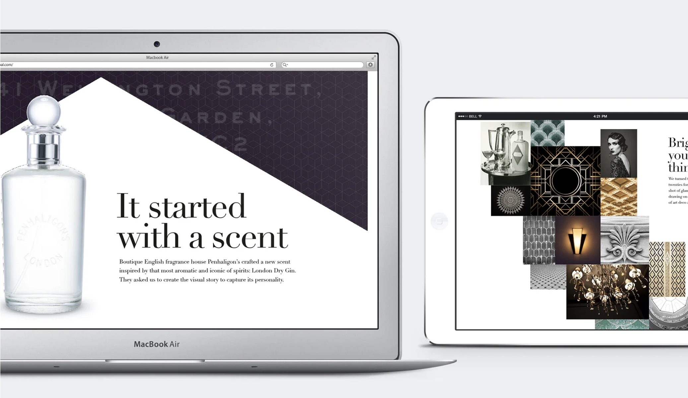
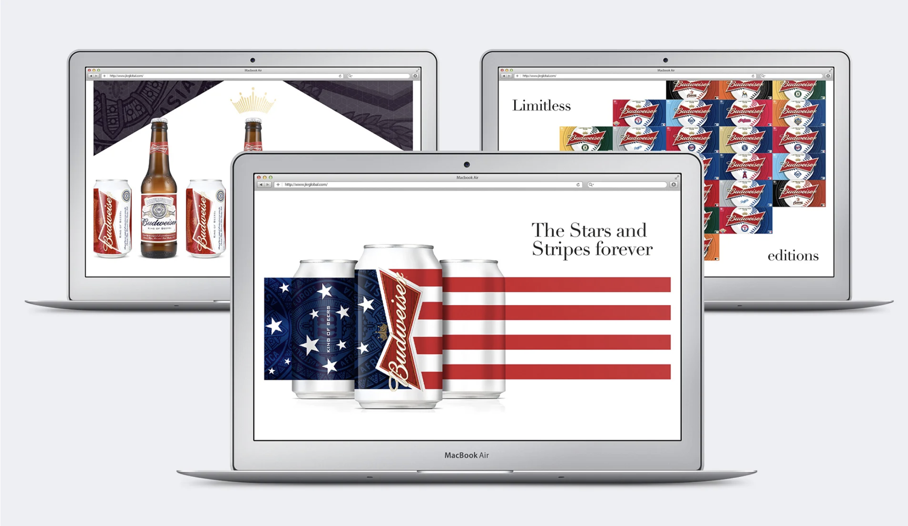
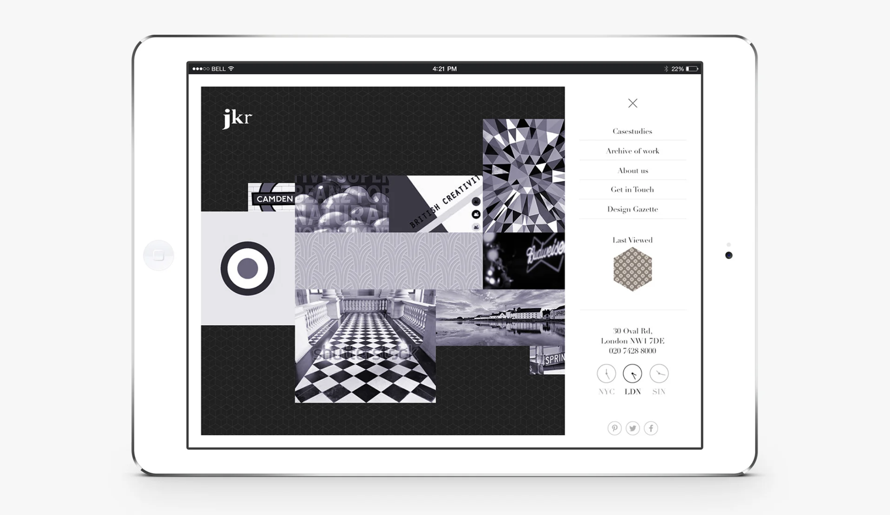
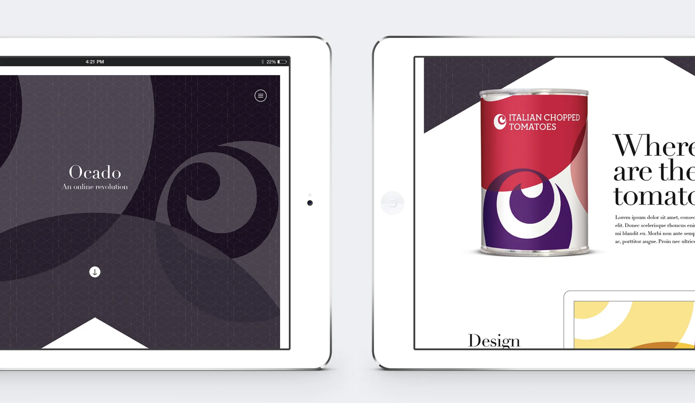
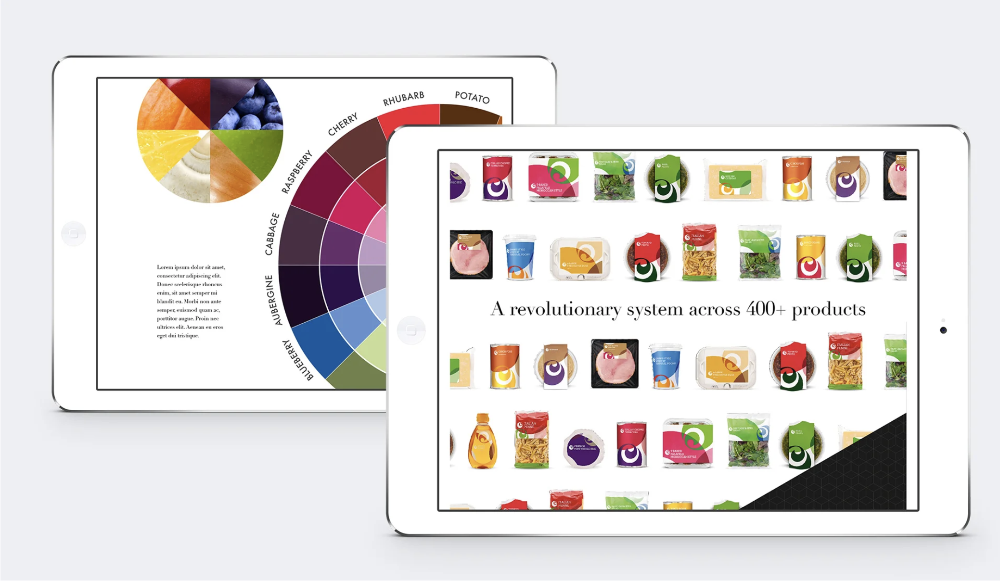
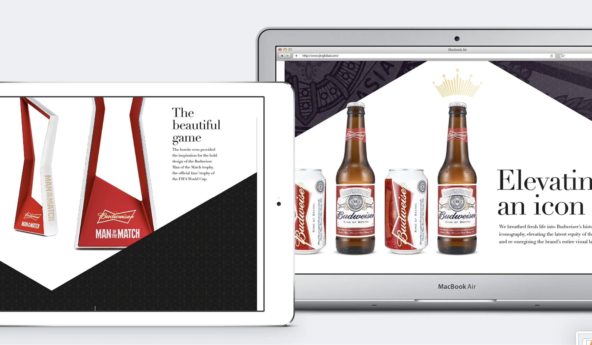
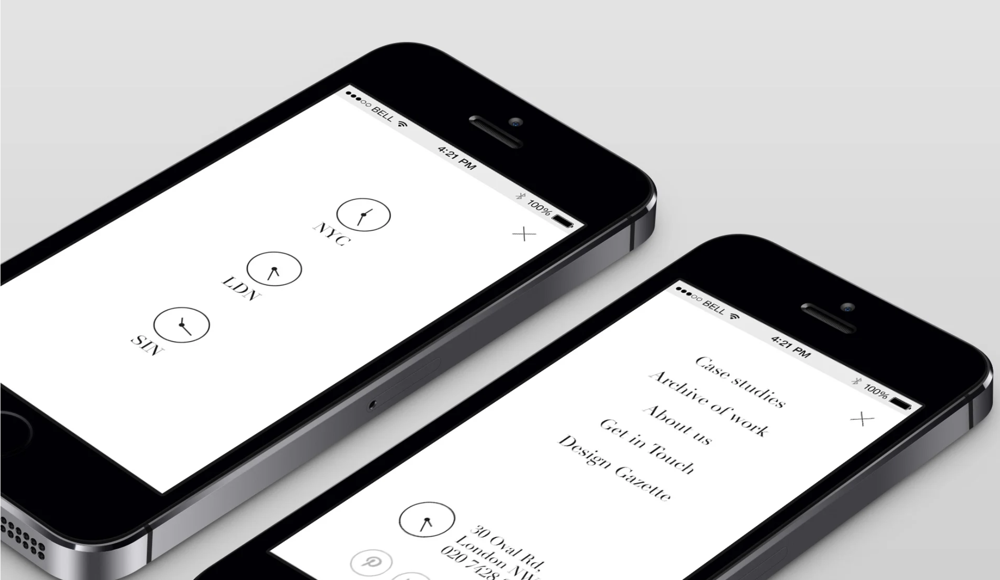

Jones Knowles Ritchie — Telling a Story
Jones Knowles Ritchie is an award-winning global design agency that believes in the power of design to help brands grow. While working at Dare, we proposed a new responsive website redesign based on the theme 'Telling a Story' — how JKR uses visual narrative as the foundation of their client work.

A creative agency that needed to show, not tell.
Part of JKR's kick-off process with clients is to explain how they incorporate visual storytelling into their work. They needed a website that didn't just describe this philosophy — it demonstrated it. The new design had to feel as considered and crafted as the brand work JKR produces for clients like Heinz, Budweiser, and Flora.
Typography, motion, and moments of delight.
The design centred on bold, editorial typography paired with full-bleed imagery and subtle interactions. We included embedded video, animated transitions, and contextual snippets of information that rewarded exploration. Every scroll was an opportunity to demonstrate JKR's craft philosophy in action.



Responsive, editorial, immersive.
The layout adapted fluidly across breakpoints while preserving the visual hierarchy that made the desktop experience feel premium. Navigation was minimal — letting the content breathe. The result was a proposal that positioned JKR's digital presence at the same level as their physical brand work.




"Design that demonstrates craft — not just describes it."